Functional Description Bluetooth Test IMIB
Functional Description Bluetooth Test IMIB
Bluetooth test with the (IMIB) Integrated Measurement Interface Box
With the Integrated Measurement Interface Box (IMIB) it is possible to perform an independent Bluetooth test of the vehicle components. The IMIB acts in a similar way to a mobile phone, and can be connected to the vehicle to checked in this way. Please refer to the operating instructions of the vehicle for the procedure for establishing a Bluetooth connection to the vehicle, also known as Bluetooth pairing.
NOTE: The result of the Bluetooth test, as an independent version on the IMIB, is not taken over into the diagnosis report. The Bluetooth test must be used as an additional tool for performing diagnosis on BMW group vehicles. If the test has not been performed successfully, a vehicle diagnosis must be performed using ISTA. Warranty related invoicing can only take place after a full diagnosis has taken place.
The following general conditions must be taken into account in order to be able to successfully carry out the Bluetooth test.
- The latest software must be installed on the IMIB.
- Battery charger connected.
- Ignition turned on.
- Perform Bluetooth test with the IMIB on the driver's seat.
- Determine the Bluetooth passkey if necessary.
NOTICE:
The Bluetooth passkey to be used can be found in the vehicle documentation or on the label on the telephone control unit for vehicles E46, E83, E53, E85, E86, E65, E66, E67, E68 and RR1, RR2, RR3 (depending on equipment). This can additionally be read out via the control unit functions of the telephone control unit.
The examples listed in the description refer only to connections with BMW vehicles. The system behaves identically for vehicles of the type MINI or Rolls-Royce.
Proceed as follows to perform the Bluetooth test:
Step 1.
Open up the menu on the IMIB by pressing the MENU button. Select the BLUETOOTH TEST using the navigation buttons and confirm with OK.
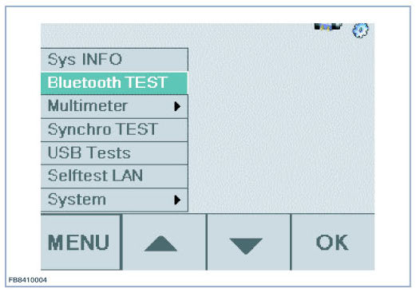
Step 2.
The initialization of the Bluetooth test is performed.
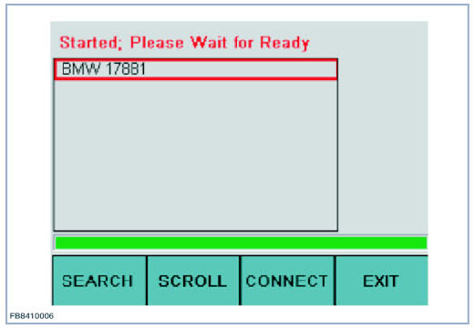
The Bluetooth test is initialized when the READY message appears in the top line of the display.
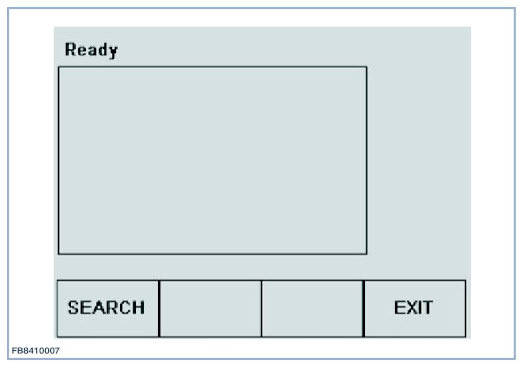
Step 3.
Activate Bluetooth on the vehicle and activate the device search of the vehicle as described in the operating instructions.
Step 4.
Start the search for the activated vehicle by pressing the SEARCH button on the IMIB.
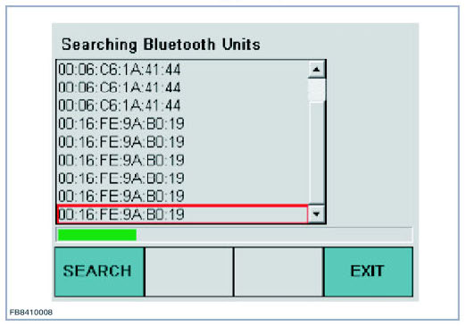
NOTICE:
First, the hardware addresses of the found Bluetooth devices are shown. Other Bluetooth devices (e.g. mobile phones) may be found, but it is not possible to make a connection to other devices.
The green information bar shows the progress of the search.
Device addresses can be present multiple times in this list.
After completion of the search, the corresponding names are searched for and displayed.
The complete search process can take up to 30 seconds.
If devices are found, these will be shown as described in point 5.
If no devices with the corresponding identification were found, this is displayed by the text NO VEHICLES FOUND and the selection window remains empty.
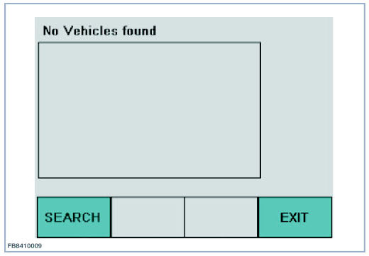
In this case, repeat the search for the Bluetooth device up to five times as described in step 4.
Step 5.
Move the red outline marking for selecting the vehicle to be connected by pressing the SCROLL button.
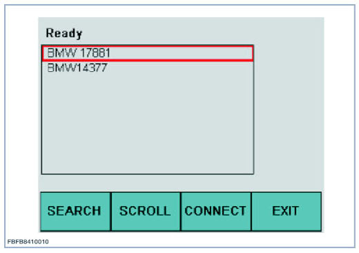
NOTICE: Found vehicles respond to the IMIB with their name (make) and number (the last 5 digits of the vehicle identification number).
Examples:
- BMW 17881
- MINI 36617
- RR 32002
Step 6.
Initiate the connection by pressing the CONNECT button on the IMIB.
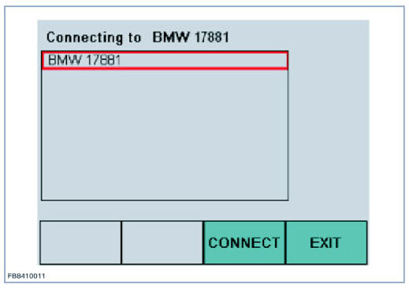
NOTICE: A connection can only be established from the IMIB to the vehicle, not the other way around.
Step 7.
Enter the Bluetooth passkey in the vehicle and confirm with OK.
NOTICE: The Bluetooth passkey should not contain more than 4 digits for the test. (example on a F01 with Combox.)
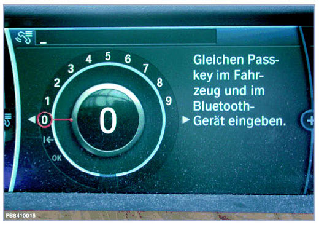
NOTICE: Vehicle E46, E83, E53, E85, E86, E65, E66, E67, E68 and RR1, RR2, RR3 (depending on equipment) are equipped with a fixed Bluetooth passkey. For the vehicles the entry of the Bluetooth passkey in the vehicle is dispensed with. The Bluetooth passkey to be used is found in the vehicle documentation or on the label on the control unit. This can additionally be read out via the control unit functions of the telephone control unit.
Step 8.
Enter Bluetooth passkey on the IMIB. Example: 0134
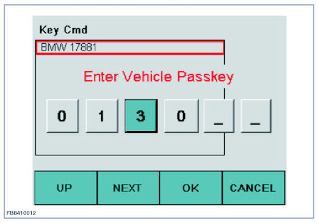
Increase the value in the selected input box with the UP button.
Select the next input box with the NEXT button and if necessary, increase the value using the UP button.
NOTICE: The display jumps to the first input box after you reach the last input box and press the NEXT button again.
Step 9.
Confirm the connection with the OK button.
If the connection setup was successful, the text PAIRING COMPLETED; CONNECTED appears
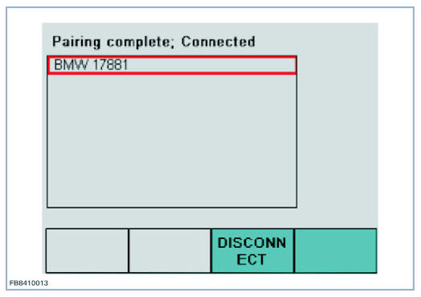
NOTICE:
The device name of the IMIB is: IMIB XXXXX (XXXXX = serial number of IMIB)
If the device name of the IMIB is displayed in the list of the connected Bluetooth devices in the control display of the vehicle (if present), the Bluetooth functionality is OK and the Bluetooth components in the vehicle are working properly.
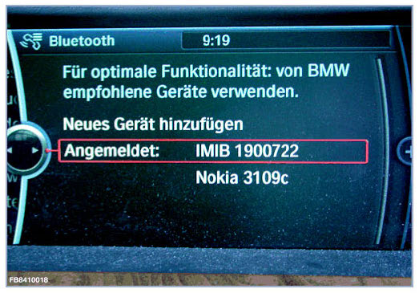
NOTICE: If the Bluetooth test was unsuccessful, repeat test with the IMIB in the luggage compartment close to the control unit. If the vehicle is found when the Bluetooth test is performed in the luggage compartment near the control unit, then the fault is most likely due to the connector of the Bluetooth antenna cable at the control unit. In this case, continue the troubleshooting there.
IMPORTANT: For a timeout during the connection setup or while transmitting the Bluetooth passkey, the connection is automatically disconnected after approx. 30 seconds and the message DISCONNECTED appears.
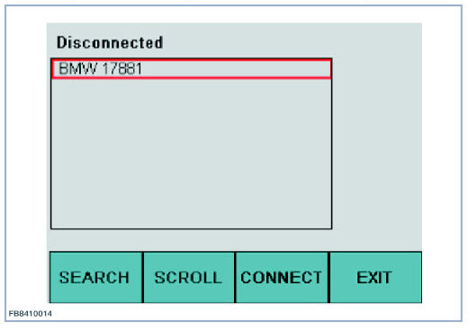
Step 10.
By pressing the DISCONNECT button, the connection can be disconnected again. This DISCONNECT button only appears for a successful connection.
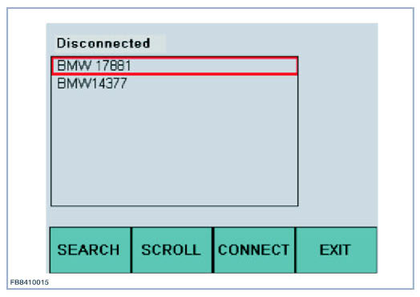
Step 11.
After completing the Bluetooth test, the IMIB must be deleted from the list of connected Bluetooth devices in the vehicle, since an unnecessary memory space will otherwise be occupied in the vehicle Bluetooth devices list. Refer to the vehicle operating instructions for this function.
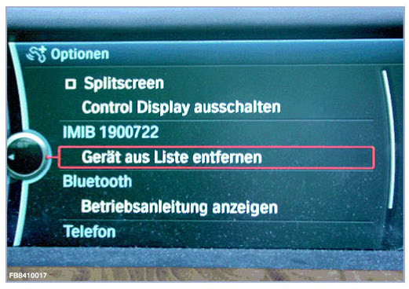
We can assume no liability for printing errors or inaccuracies in this document and reserve the right to introduce technical modifications at any time.